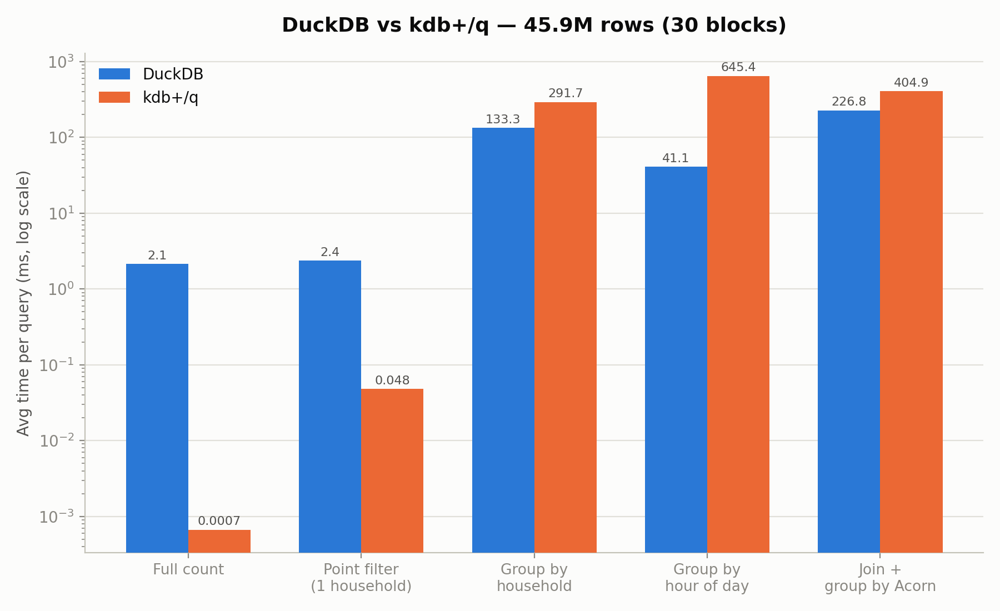
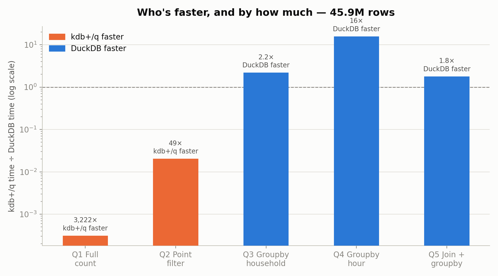
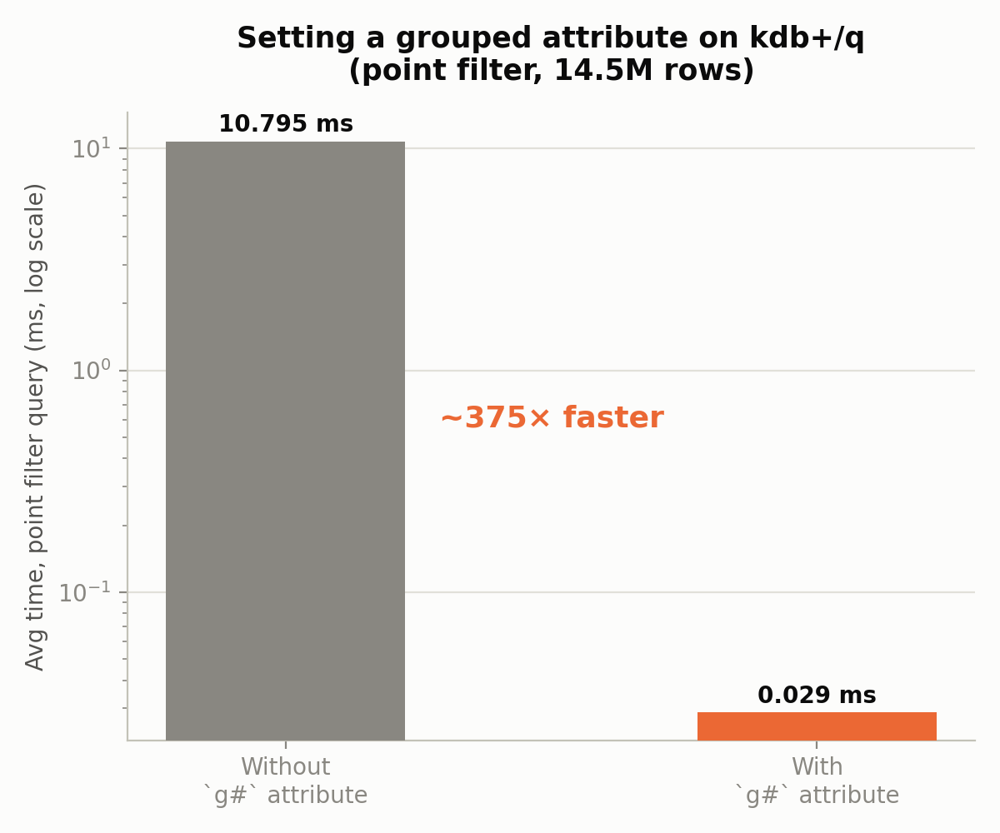
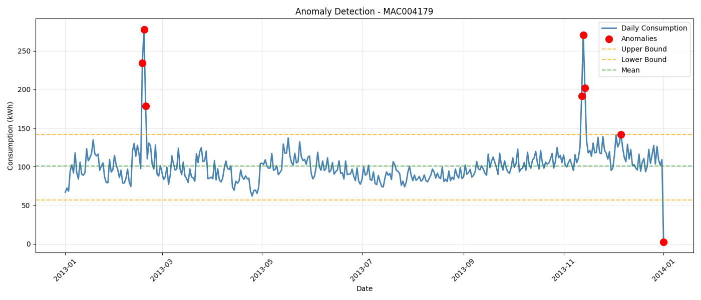

⚡ KDB+/Q vs SQL Benchmark
A same-machine performance comparison of kdb+/q and DuckDB on 46 million smart-meter readings, plus an AWS time-series analysis of the same dataset.
GitHub Repository · Benchmark code and methodology
Why this project
I built it before an interview for a Junior KDB+/Q Developer role, to learn q by measuring something instead of reading about it. The question: on the same raw data and the same machine, where does kdb+/q beat a modern columnar SQL engine, and where does it not? Benchmarks that answer "kdb+ is faster" are easy to write. This one reports where it lost, and why.
The repository has two parts on the same "Smart meters in London" dataset. Part 2, the benchmark, is the main result and is described first. Part 1 is an AWS (S3, Athena) analysis of the aggregated data with segmentation, anomaly detection and Prophet forecasts; it is shorter and has more caveats (see below).
Results at a glance
Both engines ran the same 5 queries on the raw half-hourly readings (30 blocks, 45,948,372 rows), in the same WSL2 environment. kdb+ is KDB-X 5.0 Community Edition, DuckDB runs from Python. Times in milliseconds, average of 3 runs.
| Query | DuckDB | kdb+/q | Faster engine |
|---|---|---|---|
| Q1: full row count | 2.15 | 0.0007 | kdb+/q, ~3,220× |
| Q2: point filter (one household) | 2.36 | 0.048 | kdb+/q, ~49× |
| Q3: group by household | 133.33 | 291.66 | DuckDB, ~2.2× |
| Q4: group by hour of day | 41.12 | 645.38 | DuckDB, ~15.7× |
| Q5: join + group by Acorn group | 226.80 | 404.89 | DuckDB, ~1.8× |


What the evaluation showed
- A mixed result, not a win for either engine. kdb+/q is far ahead on narrow operations (count, point lookup) and slower on grouping and joins, where DuckDB's optimiser does better. Q1 should be read with care: a row count in kdb+ is a stored length, so it says little about scan speed.
- One attribute changes the point-filter result. Setting the grouped attribute
`g#on the filter column turned Q2 from a 10.79 ms linear scan into a 0.029 ms hash lookup (about 375×) for an indexing cost under a second. Without it, kdb+/q loses even Q2 to DuckDB. - A hypothesis that failed. I expected the
`tstp.hhtemporal accessor to be the bottleneck of Q4 and tested an alternative extraction. The timings were the same (645.38 ms against 649.71 ms). The cost is in grouping by a derived column, not in the extraction. - A hardware limit, not a bug. kdb+/q loaded all 112 blocks (167.8M rows, about 15 minutes) and was then killed by the WSL2 memory ceiling while holding 112 intermediate tables. The final benchmark uses 30 blocks, a size that runs repeatably, and the scope decision is documented.

Methodology
- Same work on both sides: identical 5 queries on the same CSV files, the same machine and the same environment. The point-filter household is fixed in both scripts.
- Load time is separate from query time, because loading is a one-off cost and a real workload does not repeat it.
- Data quality: 50 rows per block hold the literal string
"Null"instead of a number in the energy column. Both engines convert it to a proper null (TRY_CASTin DuckDB, string substitution in q) instead of failing or dropping rows. - Scale chosen from a measurement: the largest size that completed repeatably, not an extrapolation from a smaller one.
Part 1: AWS analysis of the aggregated data
Raw meter data in S3, queried with Athena (serverless SQL), then analysed in Python: 4,443 meters, 17,520 half-hourly observations, 2013; 305 meters with more than 20% missing data removed, 4,138 kept.
| What | Result |
|---|---|
| Consumption groups | Three groups of nearly equal size (34%, 33%, 33%) plus 2 inactive meters |
| Prophet forecasts, one meter per group | MAE 0.036, 0.070 and 0.495 from the lowest- to the highest-consuming group |
| Anomalies in the daily total | Z-score flagged 7 days, IQR 8 days; they agree on 87.5% |

Read these results with the caveats:
- The group names are interpretation. The groups were named Industrial, Commercial and Residential from consumption level. The dataset has no building-type label, so the names are not ground truth.
- Three meters are a sample, not an evaluation. The forecast errors come from one meter per group and show that error grows with consumption, not how well the method forecasts in general.
- Explanations for the anomalous days are guesses. A cold snap on 18 Feb 2013 (the highest day) is a plausible reason, but no weather data is used in the analysis, so it was not tested.
Testing
There is no automated test suite and no CI in this repository. What was checked, by hand:
- Each timing is the average of repeated runs on the same machine; the DuckDB side was run against real data before the q side.
- The
"Null"rows are handled in both engines. - The one hypothesis test (Q4 accessor) is a controlled comparison.
Not covered
- Equal results from both engines. The q script does not record the number of rows a query returns, so the benchmark compares times, not that both engines return the same answer.
- Other hardware, other data sizes and other versions. The numbers come from one machine under WSL2 at 46M rows. kdb+/q ran out of memory at 167M rows, so that size was not compared.
- Cold-cache runs and concurrent load: not measured; each figure is an average of repeated runs.
- Part 1: no tests; the notebooks run against an S3 and Athena setup that is not in the repository.
Limitations
- One machine, one data set and five queries are enough to show where each engine is strong, not to rank them in general.
- The benchmark ran on kdb+ Community Edition with no tuning beyond the grouped attribute.
- Part 1's conclusions are descriptive: the consumption groups, the anomaly explanations and the forecast errors come from small samples and no external labels.
Tech stack: kdb+/q (KDB-X 5.0 Community Edition), DuckDB, Python, WSL2, AWS S3 and Athena, pandas, statsmodels, Prophet, Plotly, matplotlib.
Related: a measurement-first project with a stricter test suite and written leakage rules is ML Data Guard.